VPI-Mlogs: Web-based application for petrophysical data analysis (2022)
A web-based application provides Exploratory Data Analysis (EDA) and Machine Learning (ML) solutions on petrophysical borehole data problems.
Abstract
Machine learning is an important part of the data science field. In petrophysics, machine learning
algorithms and applications have been widely approached. In this context, Vietnam Petroleum Institute (VPI)
has researched and deployed several effective prediction models, namely missing log prediction,
fracture zone and fracture density forecast, etc.
As one of our solutions, VPI-MLogs is a web-based deployment
platform which integrates data preprocessing, exploratory data analysis, visualisation and model execution.
Using the most popular data analysis programming language, Python, this approach gives users a powerful tool
to deal with the petrophysical logs section.
The solution helps to narrow the gap between common knowledge and
petrophysics insights. This article will focus on the web-based application which integrates many solutions to
grasp petrophysical data.
Key Results
- Streamlit web app for exploratory data analysis (EDA)
- Machine learning workflow developed for predicting missing log data
Platforms/ Frameworks
- Python web-app: Streamlit
- LAS file process: Lasio
- Data Interactive Visualization: Plotly, Altair, Bokeh
- Machine Learning: Sci-kit learn
Deliverables
Screenshots collection
 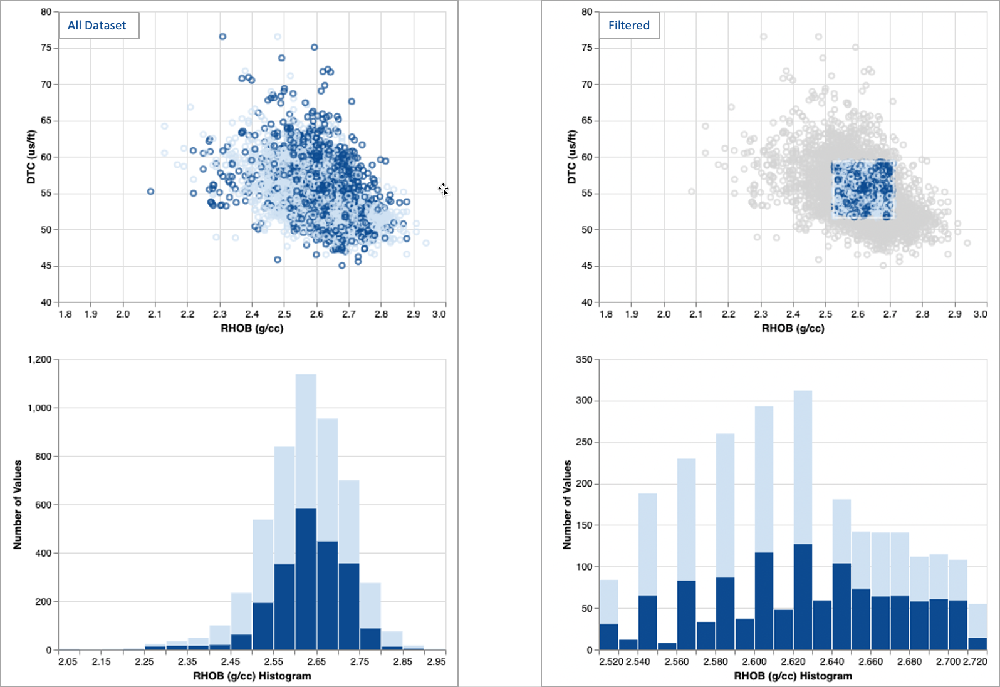
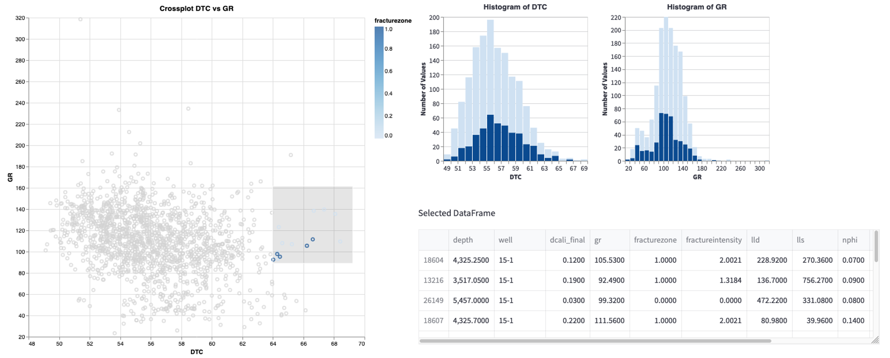
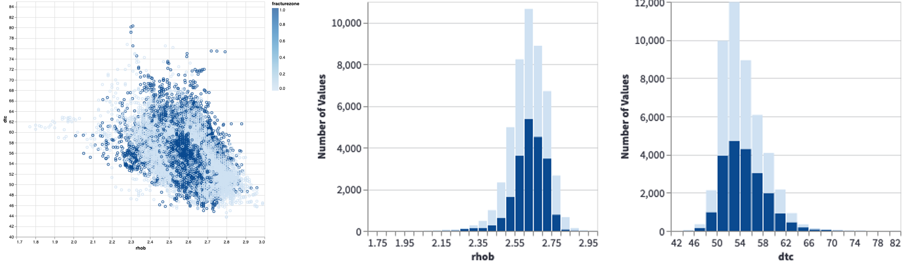
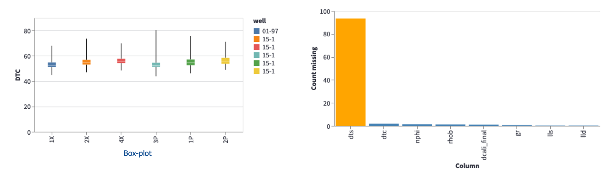
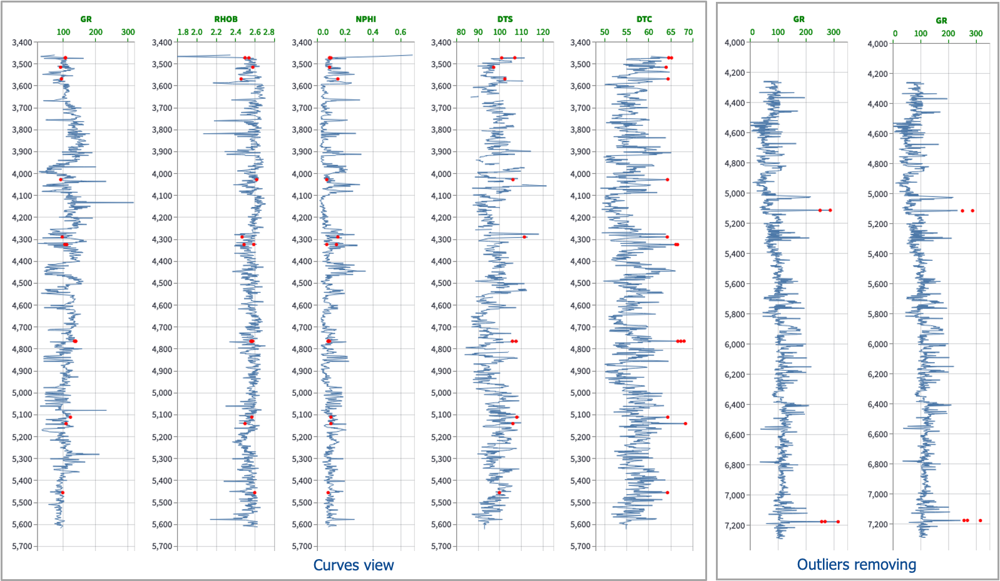
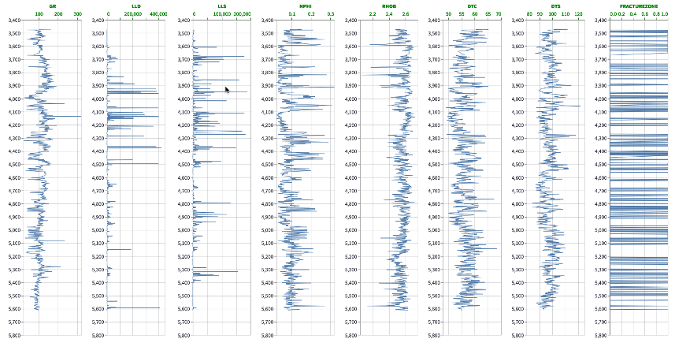
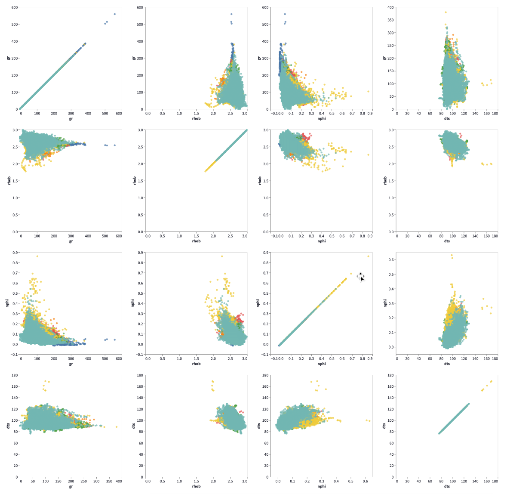
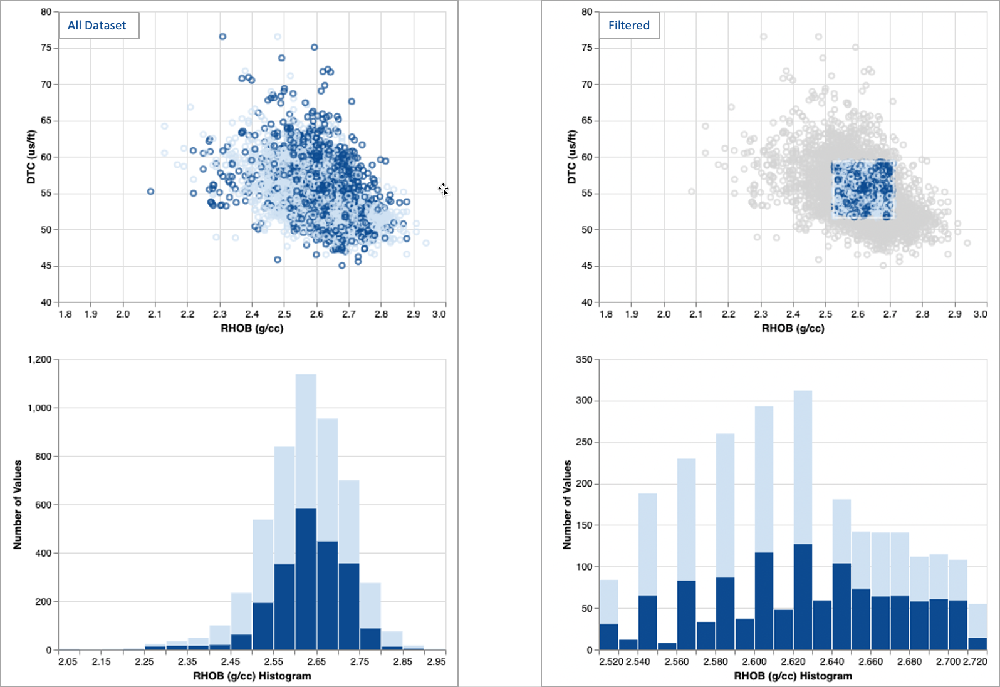
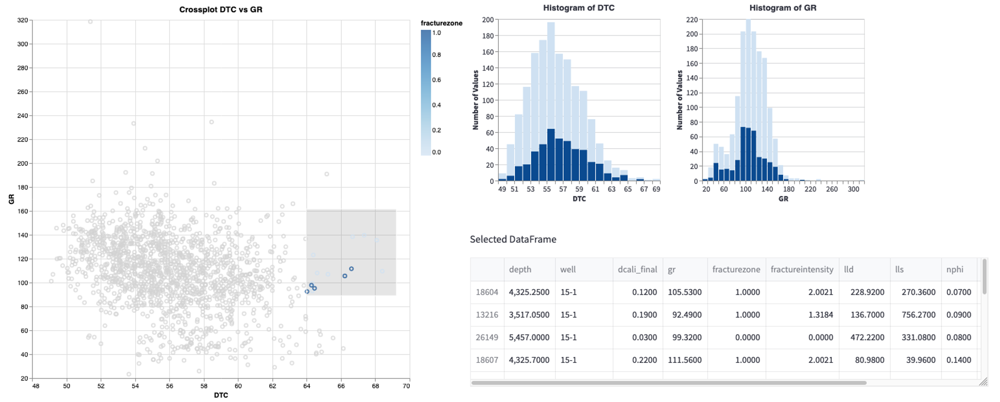
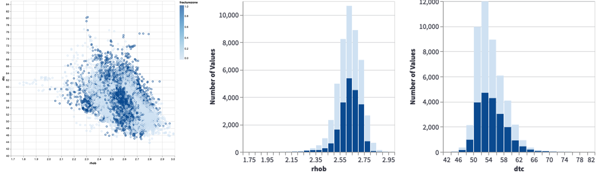
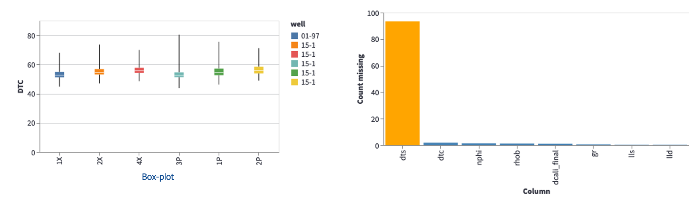
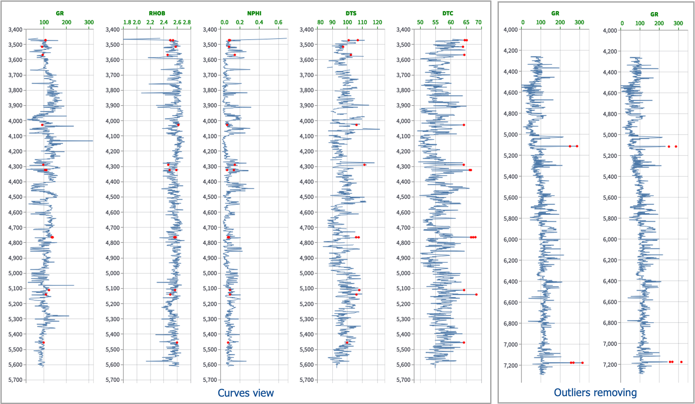
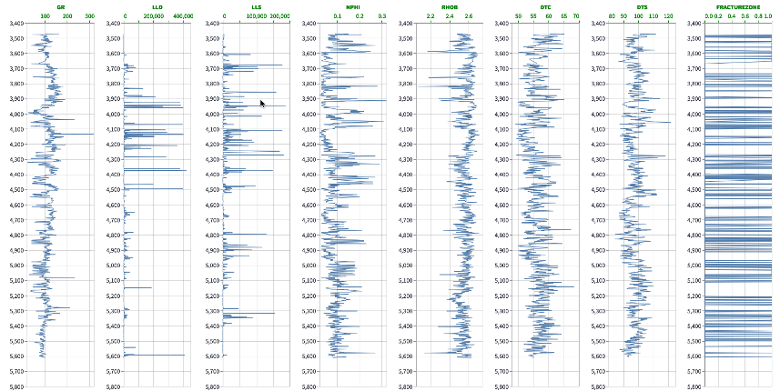
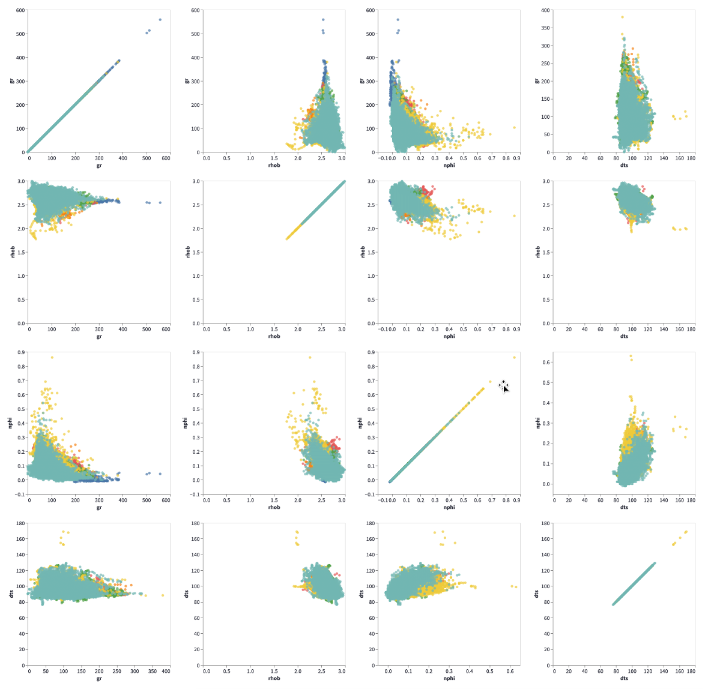